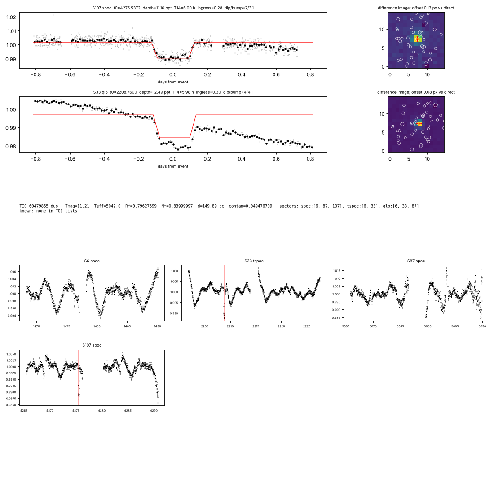
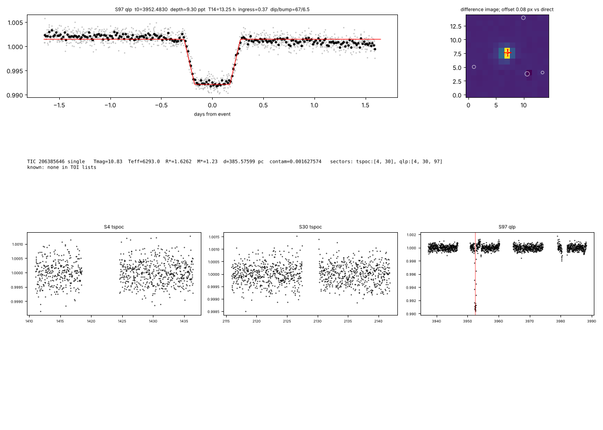
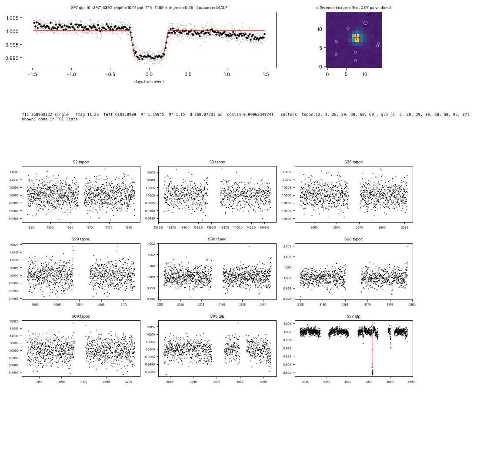
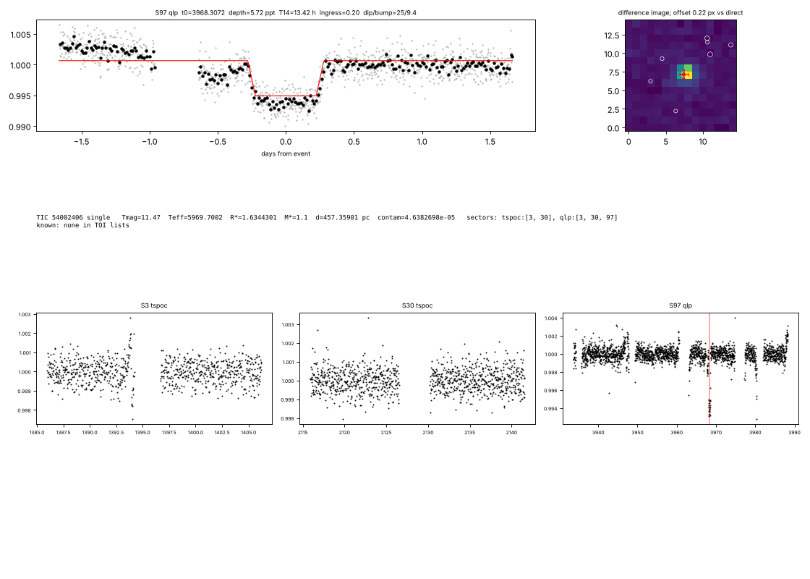
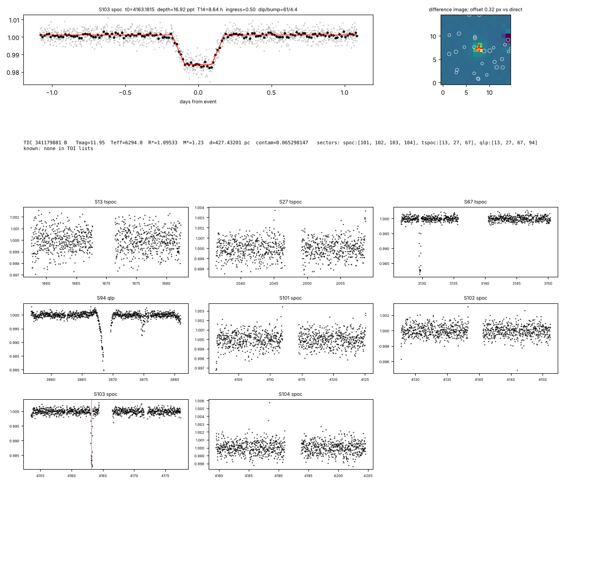
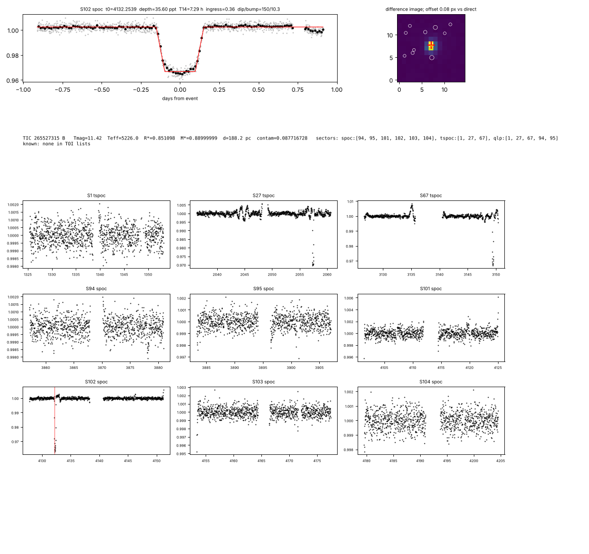

Amateur search of NASA TESS data · interim report · 11 October 2026
A blind search of 10.3 million TESS light curves for transits and eclipses that no catalogue lists yet. Three bright, nearby stars show transits of Neptune-sized planets that are not TESS Objects of Interest.
Summary
Candidate 1 · Track B (long-period transits) · SPOC 2-minute data
An F star at the edge of naked-eye visibility (V ≈ 6.1), 34 parsecs away in Lupus, dims by 642 parts per million for 7.2 hours every 23.8844 days. A planet about 4.1 times the size of Earth would do this.
NASA's SPOC pipeline did detect this signal. Its multi-sector searches of sectors 1–39 and then 1–65 found the transits in sectors 11, 38 and 65 and reported a threshold-crossing event (multiple-event statistic 26.6). One transit fell in each sector, two years apart, so the pipeline took the gap between them as the period: 740.42 d. At that period the transit is far too short for the star (its fit implied a stellar density of 8.6 ± 6.5 ρ☉), and the centroid test was flagged. In the TOI lists available to us it never became a TOI.
The fourth transit, which this survey found in sector 102 (April 2026), arrives 3 minutes from where 106 cycles of a 23.884-day period put it. 740.42 days is exactly 31 of those cycles.
Next transits seen from Chile
Fraction of the 7.2-hour transit at night from La Silla (Sun below −12°, star above 30°). Timing uncertainty is under 2 minutes.
Candidate 2 · Track B (duo transit) · SPOC 2-minute data
HD 11506 is a bright Sun-like star in Cetus with three giant planets found by the radial-velocity method, none known to transit. TESS caught two matching 3.2-hour dips, almost six years apart, of the size a planet 3.8 times the size of Earth would make.
The transits are 2149.39 days apart, so the period is that gap divided by a whole number. Each choice predicts other transits; where TESS was watching at those times (sectors 3, 30 and 107) and saw nothing, that choice is ruled out. 43 of 429 choices survive, the shortest being 25.9 days. The table lists the shortest ones with the impact parameter a circular orbit would need to give a 3.2-hour transit, and the least eccentricity that works with the fitted shape.
| n | Period (d) | min. e | b if circular |
|---|---|---|---|
| 83 | 25.90 | 0.62 | 0.92 |
| 80 | 26.87 | 0.62 | 0.92 |
| 77 | 27.91 | 0.63 | 0.92 |
| 74 | 29.05 | 0.64 | 0.92 |
| 73 | 29.44 | 0.64 | 0.92 |
| 71 | 30.27 | 0.65 | 0.93 |
| 70 | 30.71 | 0.65 | 0.93 |
| 68 | 31.61 | 0.66 | 0.93 |
| 67 | 32.08 | 0.66 | 0.93 |
| 64 | 33.58 | 0.67 | 0.93 |
| 61 | 35.24 | 0.68 | 0.94 |
| 58 | 37.06 | 0.69 | 0.94 |
Candidate 3 · Track B, found during vetting · SPOC 2-minute data
A Sun-like G0 star (V = 8.8), 73 parsecs away in Centaurus, dims by 775 ppm for 2.8 hours every 19.8262 days. A planet about 3.1 times the size of Earth would do this. SPOC never saw two of its transits in one search, so it raised no alert.
Next transits seen from Chile
Track B · deep vetting
Every shortlisted star brighter than T = 10.5 went through the same checks as the headline candidates: Gaia binarity, TOI and SPOC lookups, the depth of each dip in every sector, the period aliases, and a pixel-level source test against every Gaia star within 150″ that could fake the dip with an eclipse of at most 50%. 45 of 142 survive and are listed below, smallest first (65 off-target, 21 binary host, 9 no consistent period, 2 ambiguous pixels). HIP 56966 above came out of this list.
| Star | T | Rp (R⊕) | Transits | Period | Pixels | RUWE | TCE | Literature | Verdict |
|---|---|---|---|---|---|---|---|---|---|
| TIC 318707987 · HIP 2736 | 8.2 | 2.9 | 1 (S70) | ≥ 11 d | on target (next best Δχ² +11) | 0.81 | 1 | not checked | candidate |
| TIC 266376971 · HIP 56966 | 8.3 | 3.3 | 4 (S10, 64, 99, 100) | 19.826 d | on target (next best Δχ² +233) | 0.81 | 0 | no mentions found | candidate |
| TIC 402710280 | 9.2 | 4.2 | 2 (S39, 93) | 1454 d / n, 6 of 12 allowed | on target (next best Δχ² +1401) | 1.00 | 0 | not checked | candidate |
| TIC 64038538 | 10.1 | 4.4 | 2 (S41, 82) | 1115 d / n, 6 of 12 allowed | on target (next best Δχ² +99030) | 0.95 | 0 | not checked | candidate |
| TIC 144540899 | 9.1 | 5.8 | 1 (S87) | ≥ 29 d | on target (next best Δχ² +137) | 1.10 | 0 | not checked | candidate |
| TIC 21725734 | 10.0 | 5.9 | 1 (S33) | ≥ 40 d | on target (next best Δχ² +389) | 1.03 | 0 | not checked | candidate |
| TIC 234442708 | 8.2 | 6.0 | 1 (S46) | ≥ 46 d | on target (next best Δχ² +999) | 0.88 | 0 | not checked | candidate |
| TIC 253917513 | 8.8 | 6.0 | 1 (S67) | ≥ 20 d | on target (next best Δχ² +339) | 1.25 | 0 | not checked | candidate |
| TIC 441010857 | 9.8 | 6.9 | 3 (S38, 38, 64) | 24.054 d | on target (next best Δχ² +191) | 1.13 | 0 | not checked | candidate |
| TIC 365864904 | 10.3 | 7.0 | 1 (S83) | ≥ 60 d | on target (next best Δχ² +13) | 0.93 | 0 | not checked | candidate |
| TIC 365043219 | 10.1 | 7.0 | 1 (S83) | ≥ 60 d | on target (next best Δχ² +98) | 0.96 | 0 | not checked | candidate |
| TIC 162305348 | 9.1 | 7.8 | 4 (S37, 63, 90, 100) | 35.383 d | on target (next best Δχ² +2088) | 1.11 | 0 | no mentions found | candidate Short (1.9 h) for a 35-day orbit around an F star: a grazing crossing, so the companion may be larger than it looks. |
| TIC 148742754 | 10.2 | 8.2 | 1 (S7) | ≥ 42 d | on target (next best Δχ² +382) | 0.94 | 0 | not checked | candidate |
| TIC 429893047 | 9.2 | 8.2 | 1 (S15) | ≥ 58 d | on target (next best Δχ² +1392) | 1.03 | 0 | not checked | candidate |
| TIC 289086207 | 9.7 | 8.3 | 1 (S54) | ≥ 49 d | on target (next best Δχ² +3701) | 0.94 | 0 | not checked | candidate |
| TIC 176518126 | 10.5 | 9.1 | 2 (S6, 33) | 730 d / n, 5 of 12 allowed | on target (next best Δχ² +384) | 1.24 | 0 | not checked | candidate |
| TIC 193980106 | 10.2 | 9.2 | 1 (S83) | ≥ 60 d | on target (next best Δχ² +6928) | 0.93 | 0 | not checked | candidate |
| TIC 44024153 | 10.1 | 9.3 | 2 (S56, 83) | 721 d / n, 12 of 12 allowed | on target (next best Δχ² +693) | 1.04 | 0 | not checked | candidate |
| TIC 127236148 | 10.2 | 9.8 | 1 (S43) | ≥ 46 d | on target (next best Δχ² +80) | 1.01 | 0 | not checked | candidate |
| TIC 468905412 | 8.7 | 10.0 | 2 (S59, 73) | 354 d / n, 7 of 12 allowed | on target (next best Δχ² +21428) | 1.00 | 0 | not checked | candidate |
| TIC 41743658 | 9.3 | 10.3 | 1 (S24) | ≥ 23 d | on target (next best Δχ² +2467) | 0.97 | 0 | not checked | candidate |
| TIC 395976939 | 9.5 | 10.5 | 1 (S55) | ≥ 33 d | on target (next best Δχ² +121) | 0.97 | 0 | not checked | candidate |
| TIC 216737675 · HIP 96920 | 9.6 | 10.7 | 1 (S41) | ≥ 15 d | on target (next best Δχ² +5055) | 0.86 | 0 | not checked | candidate |
| TIC 102923633 | 10.2 | 10.8 | 1 (S53) | ≥ 36 d | no neighbour bright enough | 0.98 | 0 | not checked | candidate |
| TIC 215718896 | 10.3 | 11.1 | 1 (S14) | ≥ 29 d | on target (next best Δχ² +336) | 0.94 | 0 | no mentions found | candidate |
| TIC 274945051 | 10.0 | 11.5 | 1 (S24) | ≥ 11 d | no neighbour bright enough | 1.22 | 0 | not checked | candidate |
| TIC 144818726 | 10.1 | 11.7 | 1 (S36) | ≥ 40 d | on target (next best Δχ² +578) | 0.93 | 0 | not checked | candidate |
| TIC 71631629 | 8.7 | 11.8 | 1 (S87) | ≥ 26 d | no neighbour bright enough | 1.02 | 0 | not checked | candidate |
| TIC 237077016 | 9.2 | 11.8 | 1 (S55) | ≥ 118 d | on target (next best Δχ² +1160) | 0.89 | 0 | not checked | candidate |
| TIC 459801869 · HIP 63987 | 9.2 | 11.9 | 2 (S23, 23) | 20.435 d | on target (next best Δχ² +1363) | 0.91 | 0 | not checked | candidate |
| TIC 137966491 | 10.5 | 12.1 | 3 (S18, 58, 85) | 28.843 d | on target (next best Δχ² +3615) | 0.92 | 2 | not checked | candidate |
| TIC 447447071 | 9.8 | 12.3 | 1 (S66) | ≥ 18 d | on target (next best Δχ² +206) | 1.26 | 0 | not checked | candidate |
| TIC 234523941 | 9.9 | 12.3 | 1 (S2) | ≥ 44 d | no neighbour bright enough | 0.88 | 0 | not checked | candidate |
| TIC 265340681 | 10.0 | 12.6 | 2 (S34, 61) | 737 d / n, 9 of 12 allowed | on target (next best Δχ² +986) | 0.81 | 0 | not checked | candidate |
| TIC 33743172 | 10.2 | 12.6 | 1 (S33) | ≥ 17 d | on target (next best Δχ² +5396) | 0.98 | 0 | not checked | candidate |
| TIC 70803960 | 10.4 | 12.6 | 1 (S91) | ≥ 10 d | on target (next best Δχ² +254) | 1.15 | 0 | no mentions found | candidate |
| TIC 157264264 | 10.2 | 12.8 | 1 (S48) | ≥ 33 d | on target (next best Δχ² +445) | 1.00 | 0 | not checked | candidate |
| TIC 430746529 · HIP 109818 | 7.9 | 13.8 | 1 (S56) | ≥ 65 d | on target (next best Δχ² +5566) | 0.97 | 0 | not checked | candidate |
| TIC 212180785 | 10.4 | 14.2 | 2 (S12, 93) | 2201 d / n, 12 of 12 allowed | on target (next best Δχ² +141) | – | 0 | no mentions found | candidate |
| TIC 148821223 | 10.1 | 14.3 | 1 (S24) | ≥ 22 d | on target (next best Δχ² +313) | 0.87 | 0 | not checked | candidate |
| TIC 140924300 | 10.5 | 14.3 | 1 (S88) | ≥ 53 d | on target (next best Δχ² +3503) | 0.87 | 0 | not checked | candidate |
| TIC 192687318 | 10.4 | 14.5 | 1 (S18) | ≥ 18 d | on target (next best Δχ² +286) | 1.03 | 0 | not checked | candidate |
| TIC 203892745 | 9.4 | 15.4 | 1 (S80) | ≥ 9 d | on target (next best Δχ² +1831) | 0.96 | 1 | not checked | candidate |
| TIC 457134361 · HIP 45983 | 8.5 | 15.9 | 1 (S21) | ≥ 18 d | on target (next best Δχ² +575) | 0.99 | 0 | no mentions found | candidate One 11.6-hour, 1%-deep transit; at least 17.6 days, and long for a Sun-like star, so likely hundreds of days. |
| TIC 468324489 | 10.0 | 16.0 | 1 (S82) | ≥ 12 d | on target (next best Δχ² +517) | 1.17 | 0 | not checked | candidate |
Pixels: Δχ² of the best alternative source relative to the target, summed over transits (2-minute pixels where available, full-frame cutouts otherwise). Positive means the target fits better. RUWE above 1.4 hints at an unresolved binary.
Track B · single and duo transits
Every planet-sized dip on a dwarf star that passed the shape tests and is not a known TOI was followed up star by star: the dip finder was run on every TESS sector of the star, SPOC's own detections were read from the data-validation reports, and TOIs within 150″ were checked for a matching period. Of 2263 such stars, 636 turned out to be eclipsing binaries (deeper eclipses elsewhere in their data), 9 carry a TOI on a neighbouring star with the same period, and 7 became TOIs during 2026. Of the rest, 869 are left out here because they are larger than 16 Earth radii, repeat on periods shorter than 15 days, or were flagged in five or more SPOC searches without becoming TOIs (most likely rejected as binaries). The 743 below remain. Most are giant-sized and could be brown dwarfs or small stars; all need the pixel and period work done for the two headline candidates.
| Star | T mag | Teff | R★ (R☉) | Sectors with dips | Depth (ppt) | T14 (h) | Rp (R⊕) | Period (d) | SPOC TCEs | Status |
|---|---|---|---|---|---|---|---|---|---|---|
| TIC 430746529 | 7.9 | 9,384 | 1.94 | 56 | 4.2 | 16.1 | 13.8 | ≥ 65 | 0 | single transit |
| TIC 173329532 | 11.0 | 5,048 | 0.77 | 8;88 | 10.9 | 8.3 | 9.1 | ≥ 46 | 0 | single transit |
| TIC 159730525 | 10.6 | 5,867 | 1.28 | 105 | 10.5 | 11.8 | 14.3 | ≥ 45 | 3 | repeats |
| TIC 71631629 | 8.7 | 5,705 | 1.53 | 87 | 5.0 | 11.2 | 11.8 | ≥ 26 | 0 | single transit |
| TIC 165795955 | 11.3 | 5,754 | 0.87 | 44;47 | 17.0 | 5.9 | 12.4 | ≥ 79 | 0 | single transit |
| TIC 4011632 | 9.3 | 6,243 | 1.35 | 98 | 7.4 | 4.5 | 12.7 | ≥ 19 | 0 | single transit |
| TIC 147813662 | 11.8 | 3,980 | 0.61 | 91 | 26.5 | 4.9 | 11.0 | ≥ 15 | 0 | single transit |
| TIC 13093071 | 11.6 | 5,217 | 0.79 | 98 | 13.7 | 7.3 | 10.2 | ≥ 30 | 0 | repeats |
| TIC 262590678 | 11.0 | 5,889 | 1.01 | 83 | 13.2 | 6.2 | 12.7 | ≥ 63 | 0 | repeats |
| TIC 22442522 | 11.9 | 4,825 | 0.79 | 90;101 | 15.2 | 4.9 | 10.8 | ≥ 27 | 1 | repeats |
| TIC 144818726 | 10.1 | 6,133 | 1.07 | 36 | 9.6 | 4.3 | 11.7 | ≥ 40 | 0 | single transit |
| TIC 313339542 | 11.1 | 5,918 | 1.11 | 47 | 10.9 | 10.5 | 12.7 | ≥ 45 | 0 | single transit |
| TIC 457134361 | 8.5 | 5,538 | 1.02 | 21 | 10.5 | 11.6 | 15.9 | ≥ 18 | 0 | single transit |
| TIC 365156316 | 11.6 | 5,560 | 1.05 | 42 | 11.7 | 20.6 | 12.4 | ≥ 31 | 0 | single transit |
| TIC 103629155 | 11.1 | 5,516 | 0.92 | 10 | 11.7 | 6.7 | 10.9 | ≥ 22 | 0 | single transit |
| TIC 468905412 | 8.7 | 6,334 | 1.55 | 73 | 3.5 | 10.5 | 10.0 | ≥ 32 | 0 | repeats |
| TIC 56862096 | 13.1 | 3,576 | 0.56 | 21 | 37.6 | 9.9 | 11.8 | ≥ 17 | 0 | single transit |
| TIC 279401253 | 11.3 | 5,859 | 1.13 | 31 | 10.2 | 5.8 | 12.4 | ≥ 19 | 0 | single transit |
| TIC 203892745 | 9.4 | 6,012 | 1.57 | 80 | 6.8 | 2.3 | 15.4 | ≥ 9 | 1 | single transit |
| TIC 358050122 | 11.3 | 6,103 | 1.36 | 97 | 10.0 | 11.9 | 14.8 | ≥ 46 | 0 | single transit |
| TIC 207783865 | 10.5 | 5,936 | 1.04 | 38 | 15.7 | 1.6 | 14.9 | ≥ 25 | 0 | repeats |
| TIC 418184706 | 10.7 | 6,162 | 1.38 | 46;46;72 | 6.2 | 6.0 | 11.9 | ≥ 18 | 0 | repeats |
| TIC 453449079 | 11.9 | 4,578 | 1.08 | 6 | 16.5 | 2.4 | 15.2 | ≥ 34 | 0 | single transit |
| TIC 448471716 | 11.4 | 4,549 | 0.80 | 90;99;100 | 8.7 | 6.2 | 8.6 | ≥ 32 | 1 | repeats |
| TIC 65910228 | 9.7 | 6,202 | 1.92 | 33 | 3.1 | 14.3 | 12.0 | ≥ 46 | 0 | single transit |
| TIC 257352273 | 10.7 | 5,852 | 1.21 | 82;82 | 7.5 | 14.2 | 11.5 | – | 0 | single transit |
| TIC 366299304 | 11.7 | 5,531 | 0.95 | 20 | 19.3 | 3.3 | 15.9 | ≥ 22 | 0 | single transit |
| TIC 188043856 | 11.7 | 3,602 | 0.62 | 9 | 24.5 | 1.2 | 10.7 | – | 0 | repeats |
| TIC 12007147 | 11.6 | 5,003 | 0.77 | 89 | 9.7 | 17.8 | 8.9 | 27.9 | 4 | repeats |
| TIC 219413978 | 11.4 | 5,086 | 0.81 | 98 | 10.3 | 10.2 | 9.1 | ≥ 49 | 0 | single transit |
| TIC 373876456 | 11.0 | 6,362 | 1.90 | 57;84 | 4.9 | 11.7 | 15.4 | ≥ 41 | 0 | single transit |
| TIC 4672985 | 11.0 | 5,735 | 1.17 | 4 | 6.2 | 4.5 | 10.1 | ≥ 19 | 0 | single transit |
| TIC 356516513 | 11.1 | 6,181 | 1.05 | 55;83 | 9.6 | 7.0 | 12.9 | ≥ 75 | 0 | single transit |
| TIC 89247735 | 11.1 | 4,394 | 0.78 | 93 | 11.6 | 4.6 | 10.4 | ≥ 18 | 0 | repeats |
| TIC 193980106 | 10.2 | 5,601 | 0.98 | 83 | 7.0 | 9.1 | 9.2 | ≥ 60 | 0 | single transit |
| TIC 456769317 | 11.2 | 5,342 | 0.97 | 34;61 | 17.1 | 4.7 | 14.1 | 16.9 | 2 | repeats |
| TIC 49381710 | 11.9 | 5,685 | 1.21 | 6 | 9.6 | 4.6 | 13.8 | ≥ 34 | 0 | repeats |
| TIC 162896022 | 10.6 | 6,029 | 1.13 | 10 | 7.9 | 16.6 | 11.1 | ≥ 57 | 0 | single transit |
| TIC 216737675 | 9.6 | 7,213 | 1.21 | 41 | 6.2 | 3.4 | 10.7 | ≥ 15 | 0 | single transit |
| TIC 357786383 | 11.2 | 4,252 | 0.70 | 16;76 | 7.6 | 5.2 | 7.7 | ≥ 25 | 0 | single transit |
| TIC 165638196 | 11.9 | 5,531 | 0.95 | 24 | 19.2 | 2.4 | 15.5 | ≥ 30 | 0 | single transit |
| TIC 279571968 | 11.6 | 6,277 | 1.10 | 2;6;8;10;11;31;35;36;37 | 8.6 | 3.9 | 12.0 | 27.3 | 0 | repeats |
| TIC 144540899 | 9.1 | 6,166 | 1.13 | 87 | 2.2 | 7.3 | 5.8 | ≥ 29 | 0 | single transit |
| TIC 28938342 | 11.5 | 6,296 | 1.32 | 14 | 11.4 | 4.7 | 15.9 | 164.0 | 0 | repeats |
| TIC 157264264 | 10.2 | 5,654 | 1.99 | 48 | 3.5 | 5.4 | 12.8 | ≥ 33 | 0 | single transit |
| TIC 19186895 | 9.6 | 6,085 | 1.14 | 7 | 2.9 | 6.0 | 6.9 | ≥ 16 | 0 | repeats |
| TIC 60479865 | 11.2 | 5,042 | 0.80 | 107 | 11.2 | 6.0 | 9.4 | ≥ 32 | 1 | repeats |
| TIC 177994853 | 11.9 | 5,408 | 1.41 | 18 | 8.7 | 4.9 | 14.8 | 17.0 | 0 | repeats |
| TIC 192561660 | 10.0 | 5,745 | 1.62 | 36 | 5.9 | 13.2 | 13.7 | ≥ 27 | 0 | single transit |
| TIC 264194780 | 11.7 | 5,559 | 1.09 | 40 | 14.3 | 2.0 | 14.4 | – | 0 | repeats |
| TIC 212375563 | 11.7 | 5,097 | 1.12 | 30 | 15.4 | 1.6 | 15.2 | ≥ 40 | 0 | repeats |
| TIC 367500073 | 9.5 | 5,884 | 0.98 | 45 | 5.3 | 1.6 | 7.9 | – | 0 | repeats |
| TIC 33743172 | 10.2 | 5,681 | 1.60 | 33 | 5.0 | 17.3 | 12.6 | ≥ 17 | 0 | single transit |
| TIC 235173044 | 11.6 | 6,018 | 1.42 | 33 | 8.1 | 18.5 | 15.4 | ≥ 28 | 0 | single transit |
| TIC 192831602 | 11.4 | 5,688 | 1.50 | 5 | 7.9 | 4.7 | 14.8 | ≥ 39 | 2 | repeats |
| TIC 468517297 | 10.3 | 6,030 | 1.93 | 16;56 | 3.0 | 18.9 | 11.8 | ≥ 39 | 0 | single transit |
| TIC 373674579 | 11.8 | 5,628 | 0.97 | 45 | 18.1 | 3.1 | 14.2 | ≥ 21 | 4 | repeats |
| TIC 219018744 | 10.9 | 6,377 | 1.44 | 16 | 6.9 | 3.5 | 13.5 | ≥ 78 | 2 | repeats |
| TIC 22642772 | 9.5 | 5,646 | 0.99 | 7 | 2.8 | 2.9 | 5.8 | ≥ 54 | 2 | single transit |
| TIC 77670980 | 11.5 | 5,923 | 1.27 | 32 | 5.5 | 23.4 | 10.3 | ≥ 28 | 0 | single transit |
Rp assumes the catalogue stellar radius and corrects for contaminating flux. "Period" is the shortest period the other TESS data allow for a single transit, or the ephemeris through repeated events.
Automatic dossiers: the dip with its fit (top left), the difference image with Gaia neighbours (top right), and every TESS sector of the star. Select one to enlarge.






Track C · eclipsing triples and quadruples
For every light curve with several deep dips, the main eclipsing period was found, a template of those eclipses was subtracted, and the residuals were searched for a second eclipse train. 4699 stars showed a strong second signal that is not a harmonic of the first and is eclipse-shaped (box depth at least three times the swing of a sine wave at that period, which rejects pulsations and spots). The table lists those whose second period recurs in two or more sectors, the strongest evidence that it is real.
Two caveats apply to every row. Most such pairs are two unrelated binaries blended in the same TESS pixels, which only a pixel-level analysis per eclipse set can tell apart; and the published catalogues of TESS quadruples and triples (Kostov et al. 2022, 2024 and others) could not be downloaded from this environment, so novelty is not yet checked against them. Web searches for the top sixteen found three already published: the sextuple TIC 168789840 (all three of its eclipse periods recovered blind), a catalogued quadruple, and a pulsating binary whose pulsation, folded at twice its period, passed our eclipse-shape test. That test compares the signal with a single sine wave and will be extended to harmonics.
| Star | T mag | Sectors | P1 (d) | Depth 1 | P2 (d) | Depth 2 | Recurs | Eclipse-like | Known? |
|---|---|---|---|---|---|---|---|---|---|
| TIC 220422456 | 10.3 | 9;12;13;29;30;31;32;33;35;36;39;63;64;65;66;67;68;69;87;89;90;93;94;97 | 7.0476 | 7.0% | 3.6478 | 1.19% | 23 sectors | 7.5 | no mention found |
| TIC 233429340 | 11.8 | 17;41;55;56;57;75;76;77;82;83;84 | 0.7475 | 19.1% | 1.7790 | 6.41% | 11 sectors | 3.7 | not checked |
| TIC 293954660 | 10.0 | 14;16;41;54;55;56;75;76;81;82;83 | 2.8138 | 30.2% | 9.8056 | 0.78% | 9 sectors | 18.7 | not checked |
| TIC 268963812 | 11.9 | 7;9;34;36;61;62;63;88;89 | 5.0354 | 1.5% | 2.0776 | 0.22% | 9 sectors | 2.6 | not checked |
| TIC 418134886 | 11.3 | 18;24;57;58;77;78;84;85 | 1.9876 | 10.4% | 2.3032 | 8.28% | 8 sectors | 20.4 | not checked |
| TIC 48450535 | 11.1 | 41;53;55;74;75;80;81;82 | 4.2335 | 4.5% | 11.6261 | 2.69% | 8 sectors | 23.4 | not checked |
| TIC 370622419 | 11.8 | 9;10;11;36;37;38;63;64;90 | 2.2576 | 1.0% | 7.8165 | 0.92% | 8 sectors | 16.1 | not checked |
| TIC 321471064 | 11.9 | 10;11;37;38;64;99;100 | 0.3421 | 10.3% | 1.5573 | 9.26% | 7 sectors | 4.5 | published |
| TIC 311838200 | 9.8 | 11;37;38;64;65;99;100 | 2.1340 | 17.2% | 2.4974 | 5.38% | 7 sectors | 4.4 | no mention found |
| TIC 435263480 | 11.3 | 24;57;58;77;78;84;85 | 1.7933 | 4.8% | 5.6976 | 2.85% | 7 sectors | 9.5 | not checked |
| TIC 336882813 | 11.4 | 33;43;44;45;71;72;87 | 6.4246 | 7.8% | 2.6233 | 1.26% | 7 sectors | 5.2 | not checked |
| TIC 309264964 | 11.6 | 19;43;44;45;71;72;73 | 2.1303 | 2.4% | 3.6317 | 1.19% | 7 sectors | 11.6 | not checked |
| TIC 362818328 | 10.0 | 9;10;36;37;62;63;89;90 | 3.9215 | 0.6% | 3.9235 | 0.20% | 7 sectors | 5.0 | not checked |
| TIC 168789840 | 10.8 | 5;31;32;105;106;107 | 1.5699 | 3.9% | 8.2183 | 4.88% | 6 sectors | 11.7 | published |
| TIC 419246494 | 11.8 | 17;18;24;58;78;85 | 0.8486 | 50.5% | 1.7591 | 6.10% | 6 sectors | 3.6 | not checked |
| TIC 347301717 | 11.0 | 57;58;77;78;84;85 | 2.4930 | 4.0% | 6.5490 | 0.97% | 6 sectors | 16.0 | not checked |
| TIC 302599822 | 10.8 | 37;38;63;64;65;89 | 7.0817 | 5.2% | 3.3960 | 0.39% | 6 sectors | 7.3 | not checked |
| TIC 458859477 | 8.7 | 10;11;36;37;63;64;90 | 2.3000 | 20.5% | 5.0148 | 1.74% | 6 sectors | 5.6 | not checked |
| TIC 279178582 | 11.5 | 16;55;56;75;82;83 | 2.6040 | 4.4% | 1.7908 | 0.59% | 6 sectors | 2.0 | not checked |
| TIC 306255021 | 12.0 | 10;37;63;64;90;99 | 2.7498 | 1.7% | 5.2951 | 0.60% | 6 sectors | 6.9 | TOI |
| TIC 434452777 | 10.6 | 8;35;62;89;99 | 0.4500 | 7.2% | 8.0552 | 7.54% | 5 sectors | 13.8 | no mention found |
| TIC 346000671 | 11.9 | 24;57;58;78;84;85 | 1.8299 | 85.8% | 7.0864 | 14.08% | 5 sectors | 18.1 | not checked |
| TIC 309334280 | 9.8 | 43;44;45;71;72 | 2.9588 | 20.9% | 4.5308 | 2.40% | 5 sectors | 17.2 | not checked |
| TIC 457872192 | 11.0 | 10;36;37;63;90 | 10.0314 | 6.0% | 1.8757 | 0.85% | 5 sectors | 5.1 | not checked |
| TIC 52546430 | 11.4 | 6;7;33;34;87 | 3.5979 | 14.8% | 2.6370 | 0.96% | 5 sectors | 5.2 | not checked |
| TIC 389836747 | 10.4 | 18;24;25;58;85 | 2.5666 | 22.1% | 2.7299 | 2.29% | 5 sectors | 2.8 | not checked |
| TIC 345050437 | 10.9 | 57;58;77;78;84 | 4.4810 | 6.8% | 2.5350 | 0.83% | 5 sectors | 3.7 | not checked |
| TIC 64558861 | 11.9 | 17;57;77;83;84 | 0.8977 | 10.8% | 2.5983 | 1.26% | 5 sectors | 2.3 | not checked |
| TIC 238196979 | 11.1 | 27;36;37;62;64;66;67;68;90;93;95;97 | 9.4244 | 10.4% | 10.5113 | 0.60% | 5 sectors | 3.4 | not checked |
| TIC 429663381 | 11.5 | 43;44;45;71;72 | 2.4850 | 1.2% | 3.2416 | 0.58% | 5 sectors | 4.7 | not checked |
Track D · anomalies
This track keeps dips that no planet makes: strongly asymmetric ones, and ones that last longer than 15 hours. 777 dips passed the anomaly cuts and the all-sector check. Looked at by eye, they fall into familiar groups: the known dipper HD 100546 (recovered), eclipses of a nearby binary leaking into a full-frame aperture, fast-rotating M dwarfs whose spots the detrending could not follow, very short-period binaries sampled into stroboscopic patterns, and long-period eclipsing binaries caught in one or two deep eclipses (TIC 304213412: 18-hour, 17%-deep eclipses repeating over six years; TIC 320329350: a 32%-deep, 17-hour eclipse). None is yet a convincing new kind of object, so none is claimed here.
Track A · small planets
4,936 K and M dwarfs within 150 parsecs, with years of TESS coverage but few two-minute sectors, are being searched with every sector stitched together, for planets down to about 1.5 Earth radii. 4,936 have been searched so far. Of 2,756 stars with a signal passing the search thresholds, 48 have one with no red flag; the strongest has SDE 27.1, against 31.1 for the strongest flag-free signal in the same stars' flipped light curves. No candidate has cleared that bar yet. The search continues and will be reported in the same way, against its own flipped-data baseline.
Calibration
| Light curves searched | 10,324,827 | 98 full-frame (QLP) sectors and 9 two-minute sectors |
| Dips at 6σ or more | 10,279,820 | box filter, 10 durations from 0.75 to 18 h, red-noise-aware threshold |
| Clean dips | 1,021,239 | after removing spacecraft and CCD systematics, blends, edges, gaps and background artefacts |
| Single-transit candidates (Track B) | 118,482 | ≤ 2 clean dips per sector, dwarf host, planet-sized |
| Planet-shaped after re-fitting | 5,627 | of 43,766 re-fitted: flat-bottomed, symmetric, unique, in raw flux |
One light curve in ten was also searched upside down, through the identical pipeline. Anything found there is a false alarm by construction. Counted here: planet-shaped dips longer than 2 hours on stars hotter than 4,000 K, per thousand light curves.
| Data | LCs | Found | /1000 | Flipped LCs | Found | /1000 |
|---|---|---|---|---|---|---|
| Two-minute (SPOC) | 116,914 | 254 | 2.17 | 11,843 | 0 | 0.00 |
| Full-frame (QLP) | 10,207,913 | 4505 | 0.44 | 1,014,572 | 1477 | 1.46 |
In two-minute data the flipped light curves produced nothing, so planet-shaped dips there are essentially all astrophysical (transits or eclipses). In full-frame data the flipped rate is high in a few sectors (1, 2, 3, 4, 5, 6, 7, 9, 11, 13, 17, 18, 19, 20, 21, 22, 23, 30, 31, 32, 33, 34, 36, 37, 38, 42, 43, 44, 45, 46, 47, 56, 57, 58, 59, 60, 61, 63, 65, 67, 68, 69, 70, 71, 72, 82, 83, 88, 90, 91, 92), where scattered light adds upward bumps that turn into dips when flipped. It is an upper bound: systematics are vetoed when they hit many stars at once, and flipping only 10% of light curves makes that veto ten times weaker for the flipped set. Single full-frame dips from those sectors are treated with suspicion; both headline candidates are in two-minute data.
For TOIs with periods over 15 days and depths over 1.5 ppt, we predicted every transit that fell in a surveyed full-frame sector (3464 transits) and asked whether the survey listed it as a single-transit candidate. Shallow ones are missed more often, as expected; the rest are lost to data gaps, ephemeris drift since the TOI was found, and the deliberately strict cuts.
| Depth | Transits | Recovered |
|---|---|---|
| 1.5–3 ppt | 1467 | 20% |
| 3–6 ppt | 643 | 48% |
| 6–12 ppt | 823 | 49% |
| > 12 ppt | 531 | 45% |
Method
Everything comes from the public MAST archive on Amazon S3: QLP full-frame light curves (sectors 1–98), SPOC two-minute light curves (to sector 107) with their data-validation reports, full-frame image cubes for pixel work, and the TESS Input Catalog and Gaia DR3. Light curves are read straight from the bucket; nothing is pre-selected by other pipelines.
Each light curve is binned to 10 minutes and flattened with a robust sliding biweight. A box filter at ten durations finds dips; each threshold uses the measured scatter of the filtered series itself, so slow correlated noise is counted. Upward outliers (flares) are clipped; downward points never are.
Dips that strike many stars on the same CCD, or across the spacecraft, at the same time are vetoed. So are dips at data edges, in gaps, during background spikes, or absent from the raw aperture flux, and dips shared by nearby stars (only the deepest is kept).
Survivors are re-fitted with trapezoid, asymmetric and Gaussian models; checked against every other sector of the star; matched against TOIs, SPOC detections and the literature; and examined in the pixels with difference images and Gaia neighbours.
Full details, thresholds and their sources: docs/METHODS.md. Code: pipeline/.
Limits and next steps
Report it. ExoFOP accepts community TOIs (CTOIs) from registered users; a short Research Note of the AAS is the usual citable record for an amateur find.
Rule out impostors. Speckle or adaptive-optics imaging (both stars are bright enough for any facility) and a few high-precision radial velocities.
Weigh it. HIP 71639's expected signal is about 3 m/s, well within reach of HARPS or ESPRESSO for a V = 6 star. A transit from CHEOPS, or the full 7-hour transit on 20 April or 14 May 2027 from Chile, would confirm the period.